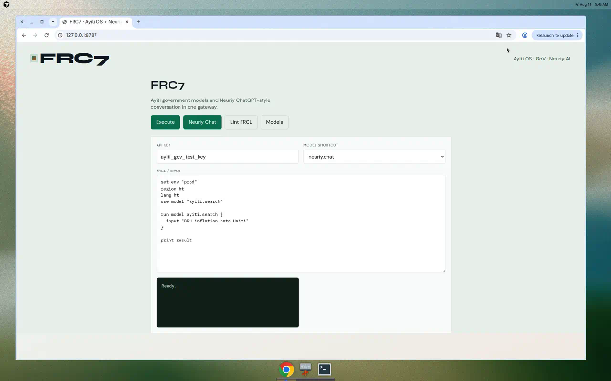

Neuriy AI + Ayiti OS in one gateway
ChatGPT-style conversation models, government APIs for Haiti, FRCL scripts, and a control panel — screenshots from the live FRC7.2 demo.



Ayiti OS · GoV · Neuriy AI
ChatGPT-style conversation models, government APIs for Haiti, FRCL scripts, and a control panel — screenshots from the live FRC7.2 demo.
